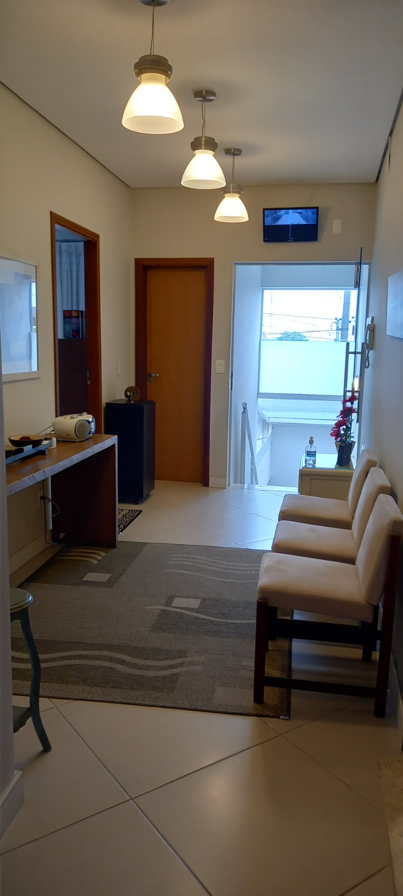
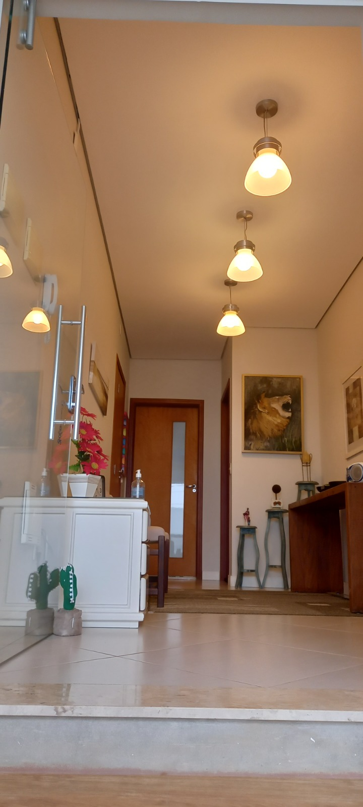
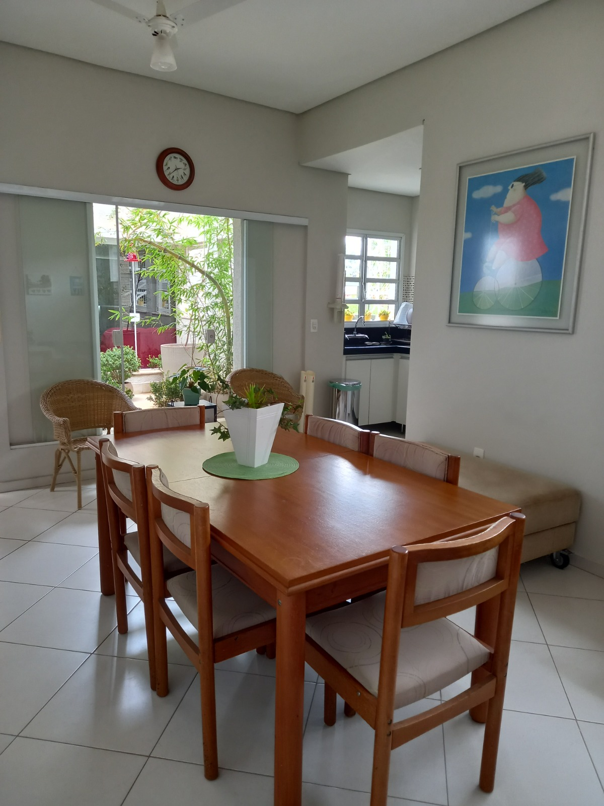
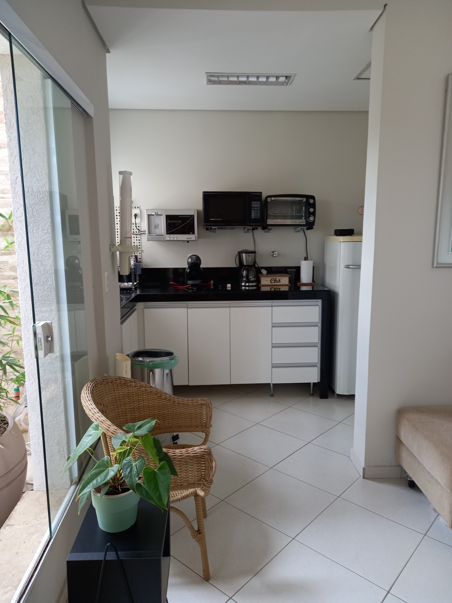
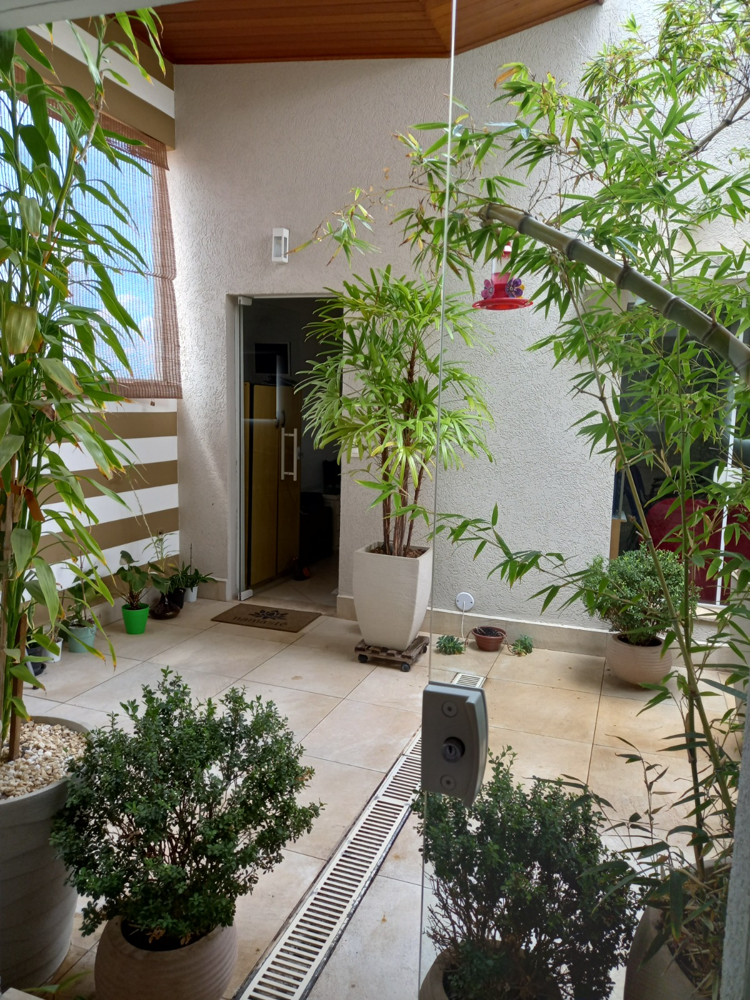
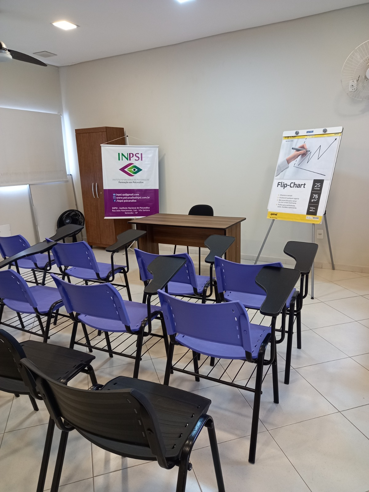
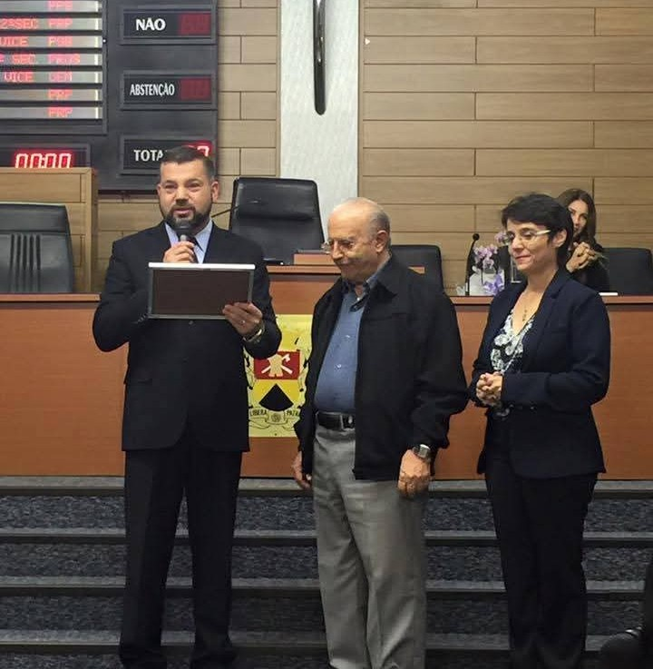

Trajetória
O INPSI desde 2013
O INPSI – Instituto Nacional de Psicanálise foi criado em 2013 com o curso para formação de psicanalistas seguindo o tripé preconizado por Freud: teoria, análise pessoal e supervisão, recebendo alunos com graduação e estudando os teóricos fundamentais das Escolas Inglesa e Francesa.
A grade de estudo continha a base teórica e clínica de Sigmund Freud e os principais conceitos de Melanie Klein, Donald Winnicott, Wilfred Bion, Jacques Lacan e Francoise Dolto, além de teóricos contemporâneos, como André Green.
Formamos ao longo desses anos 150 alunos, entre eles psicólogos, enfermeiros, professores, advogados, jornalistas, publicitários, médicos, entre outros. O corpo docente formado por profissionais atuantes, com especialização e mestrado, em constante estudo e clínica, trazendo a experiência do conhecimento e prática.
Desenvolvemos projetos com o objetivo de levar a Psicanálise a todos os interessados, como o Psicult e Projeto Ponte voltados para o público leigo e entidades sociais.
Homenageamos profissionais de destaque em âmbito local, regional e nacional, na Câmara de Vereadores de Sorocaba, entre eles o saudoso psicanalista Ryad Simon, importante teórico e clínico da Psicanálise.
Realizamos Jornadas e Simpósios com temas relevantes, apresentando trabalhos de pesquisa de alunos e profissionais convidados, consolidando ainda mais o INPSI na sua credibilidade e compromisso... Veja aqui
Atualmente, estamos em um novo espaço.






